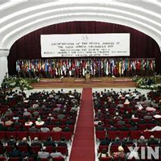

印尼雅加达苏氏宗亲会成立10周年庆典联欢大会
导读：印尼雅加达苏氏宗亲会成立10周年庆典联欢大会，于12月8日中午10时，在PIK武功堂苏氏宗祠盛大举行。新加坡苏氏公会理事长苏育明、马来西亚苏氏联宗会理事长苏清棋理事长及世苏名誉理事长即印尼雅加达苏氏宗亲会永远荣誉理事长苏用发均出席……
印尼雅加达苏氏宗亲会成立10周年庆典联欢大会，于12月8日中午10时，在PIK武功堂苏氏宗祠盛大举行。新加坡苏氏公会理事长苏育明、马来西亚苏氏联宗会理事长苏清棋理事长及世苏名誉理事长即印尼雅加达苏氏宗亲会永远荣誉理事长苏用发均出席。

雅苏氏成立10周年庆典联欢会司仪由方馨楦担任。首先印尼雅加达苏氏宗亲会先举行掀开宗亲会会所新匾牌的帷幕，分别由苏用发和苏胜辉在各主要领导陪伴下齐手拉开帷幕致意。
首邀印尼雅加达苏氏宗亲会主席苏金丰致词，除了对各界嘉宾的到来表示热烈欢迎，也阐述承蒙用发宗长捐献了大笔资金，又在胜辉宗长带领下及宗长们纷纷捐钱、出力团结资助下，兴建了本宗亲会馆。此之后宗亲更加团结、相互交流，促进宗谊感情，也和世界各地苏氏宗亲进行国际联谊；一共参加五次世苏恳亲大会，又于2008年在巴厘成功承办了第8届世界苏氏恳亲大会。此中，都是大家同心协力团结合作的成果，尤以用发宗长的大力支持使得会务工作进行顺利。此后，也望大家一如既往地继续支持，团结一致，加强合作，把会务工作推上更上一层楼。
新加坡苏氏公会理事长苏育明赞赏印尼苏氏宗亲积极扶宗事业的热忱和决心，弘宗昭祖、睦族联谊的突出表现，令人钦佩无比。